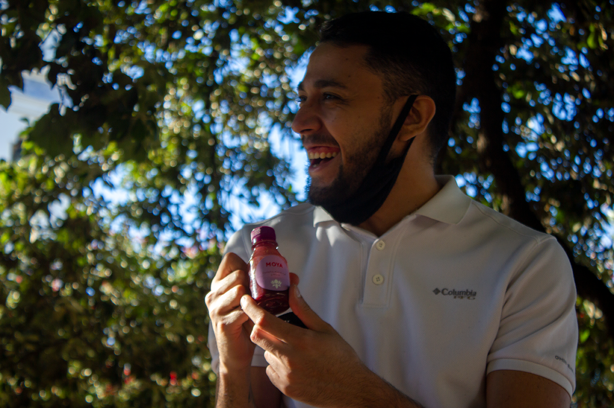
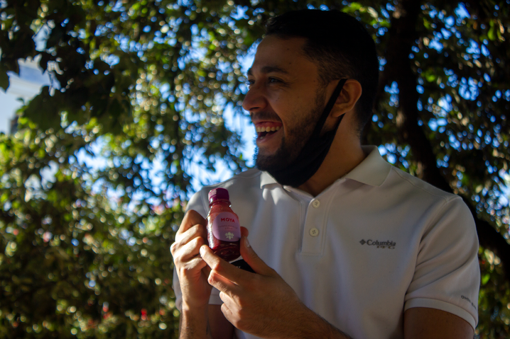

Musa Batidos es un emprendimiento de jugos tropicales que busca evocar los placeres del caribe a través de los sabores refrescantes de sus frutas tropicales. Hecho con mucha pulpa de fruta 100% natural y orgánica. Tiene una personalidad sensual, amigable, optimista y veraniega. En este proyecto se intenta expresar la frescura y sabor desde los colores de sus productos, en distintas locaciones y estados de ánimo, queriendo vender una experiencia junto con un alimento saludable y sin T.A.C.C. en contacto con la naturaleza.


 
